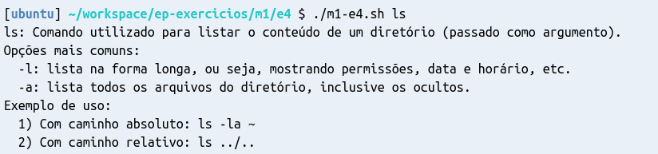

case ou if.Crie um diretório para a resolução deste exercício, como você fez no Exercício 1.
No diretório do exercício (~/workspace/ep-exercicios/m1/e4), crie um arquivo com o nome m1-e4.sh.
Assim como no Exercício 1, este arquivo será um shell script. Por isso, você já pode adicionar o shebang
na primeira linha do arquivo.
Escreva um shell script (sequência de comandos) que recebe como parâmetro o nome de um comando do Unix e imprime na tela uma breve descrição do que o comando faz. A descrição do comando deve ser escrita por você e deve ser de acordo com o seu entendimento sobre o que o comando faz. Você pode também incluir as opções mais comuns para aquele comando, assim como exemplos de uso.
Seu script deverá conter as descrições simplificadas de, no mínimo, os seguintes comandos:
cd, ls, pwd, cat, rm, mv, chmod, man, touch e grep.
A primeira linha de cada descrição deve começar com o nome do comando seguido de dois pontos.
Por exemplo:
"cd: Descrição do cd...". A figura abaixo mostra um exemplo completo de execução e da
saída esperada:

Dica: para cada comando que você for descrever, leia o manual do comando, entenda
o que ele faz e resuma em suas palavras o que acredita que ele faça. Lembre-se de que a documentação de um comando qualuqer pode ser visualizada usando o comando man ou ainda usando a opção --help. Por exemplo, para conhecer mais sobre o comando ls, você pode executar man ls ou ls --help no terminal.
Teste o seu script. Para fazer isso:
Quando você estiver satisfeito com o seu script, utilize a ferramenta ep-cli
para executar a correção do exercício.
Quando você tiver finalizado o exercício, utilize a ferramenta ep-cli
para enviar o resultado.